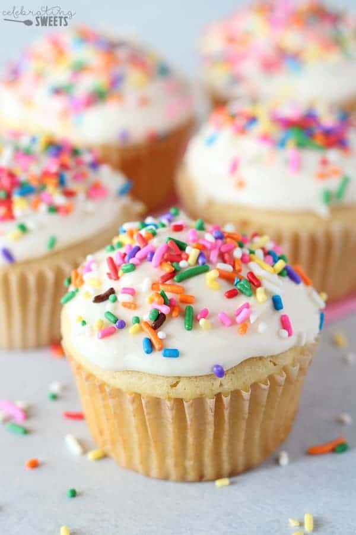

Recipe for Vanilla Cupcakes

Description
Vanilla cupcakes are super simple, tasty, and easy to make! You can never go wrong with them as party favors, or just a snack for yourself. This recipe serves 12 people and requires simple ingredients: all-purpose flour, butter, sugar, eggs, buttermilk, baking powder, salt, and vanilla. The combination of softened butter and buttermilk creates an amazingly soft cupcake crumb that just melts in your mouth.
Ingredients
- 1 1/4 cups all-purpose flour
- 1 1/4 tsp baking powder
- 1/2 tsp salt
- 1/2 cup unsalted butter, softened
- 3/4 cup sugar
- 2 large eggs, room temperature
- 2 tsp pure vanilla extract
- 1/2 cup buttermilk, or plain kefir, room temperature
Steps
- Preheat oven to 350°F and line a cupcake or muffin pan with cupcake liners.
- In a medium bowl, whisk together 1 1/4 cups flour, 1 1/4 tsp baking powder, and 1/2 tsp salt. Set flour mix aside.
- In the bowl of an electric mixer, beat butter and sugar on medium-high speed 5 minutes until thick and fluffy, scraping down the bowl as needed.
- Add eggs one at a time, beating well with each addition then scrape down the bowl. Add 2 tsp vanilla and beat to combine.
- Reduce mixer speed to medium and add the flour mixture in thirds alternating with the buttermilk, mixing to incorporate with each addition. Scrape down the bowl as needed and beat until just combined and smooth. Divide the batter evenly into a 12-count lined muffin or cupcake pan, filling 2/3 full.
- Bake for 20-23 minutes at 350 °F, or until a toothpick inserted in the center comes out clean. Let them cool in the pan for 5 minutes, then transfer to a wire rack and cool to room temperature before frosting.
Return to Main Page